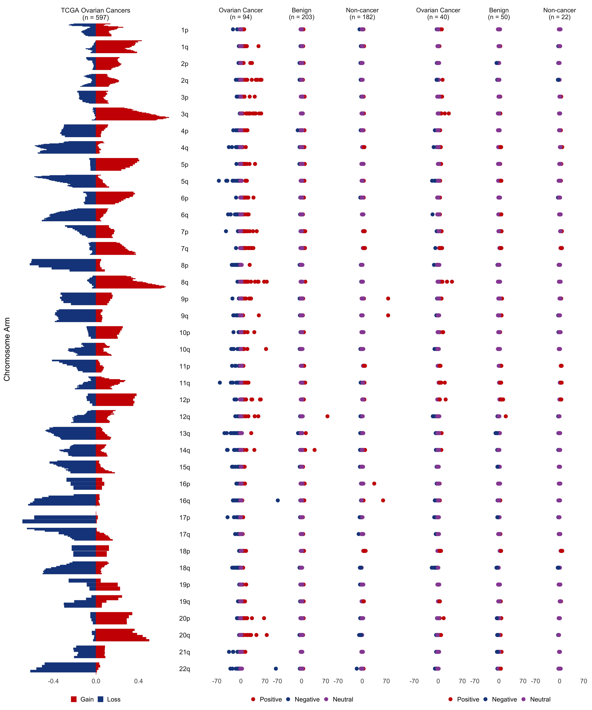

Last updated: 2024-08-01
Checks: 7 0
Knit directory: delfipro2024/
This reproducible R Markdown analysis was created with workflowr (version 1.7.1). The Checks tab describes the reproducibility checks that were applied when the results were created. The Past versions tab lists the development history.
Great! Since the R Markdown file has been committed to the Git repository, you know the exact version of the code that produced these results.
Great job! The global environment was empty. Objects defined in the global environment can affect the analysis in your R Markdown file in unknown ways. For reproduciblity it’s best to always run the code in an empty environment.
The command set.seed(20240612) was run prior to running
the code in the R Markdown file. Setting a seed ensures that any results
that rely on randomness, e.g. subsampling or permutations, are
reproducible.
Great job! Recording the operating system, R version, and package versions is critical for reproducibility.
Nice! There were no cached chunks for this analysis, so you can be confident that you successfully produced the results during this run.
Great job! Using relative paths to the files within your workflowr project makes it easier to run your code on other machines.
Great! You are using Git for version control. Tracking code development and connecting the code version to the results is critical for reproducibility.
The results in this page were generated with repository version 0bc9e1d. See the Past versions tab to see a history of the changes made to the R Markdown and HTML files.
Note that you need to be careful to ensure that all relevant files for
the analysis have been committed to Git prior to generating the results
(you can use wflow_publish or
wflow_git_commit). workflowr only checks the R Markdown
file, but you know if there are other scripts or data files that it
depends on. Below is the status of the Git repository when the results
were generated:
Ignored files:
Ignored: .Rhistory
Untracked files:
Untracked: README.html
Untracked: renv.lock
Untracked: renv/
Unstaged changes:
Modified: .Rprofile
Note that any generated files, e.g. HTML, png, CSS, etc., are not included in this status report because it is ok for generated content to have uncommitted changes.
These are the previous versions of the repository in which changes were
made to the R Markdown (analysis/S9.Rmd) and HTML
(docs/S9.html) files. If you’ve configured a remote Git
repository (see ?wflow_git_remote), click on the hyperlinks
in the table below to view the files as they were in that past version.
| File | Version | Author | Date | Message |
|---|---|---|---|---|
| html | 28c6a1b | shay-279 | 2024-08-01 | aa fix more stuff |
| Rmd | c74d1ee | shay-279 | 2024-08-01 | start |
| html | c74d1ee | shay-279 | 2024-08-01 | start |
Read in Noushin’s data for TCGA figure
fig.data <- readRDS(here('data', 'tcga', 'data.rds'))TCGA figure panel – problems, chromosome widths, making the panel match size of one facet in z-score panel
setDT(fig.data)
fig.data[,bin:=as.factor(rev(bin))][] seqnames pos arm bin variable value disease change
<fctr> <num> <fctr> <fctr> <fctr> <num> <char> <char>
1: chr1 7500000 1p 473 liver.Loss -0.208754209 liver Loss
2: chr1 17500000 1p 472 liver.Loss -0.239057239 liver Loss
3: chr1 22500000 1p 471 liver.Loss -0.254208754 liver Loss
4: chr1 27500000 1p 470 liver.Loss -0.227272727 liver Loss
5: chr1 32500000 1p 469 liver.Loss -0.126262626 liver Loss
---
942: chr22 27500000 22q 5 liver.Gain 0.028619529 liver Gain
943: chr22 32500000 22q 4 liver.Gain 0.037037037 liver Gain
944: chr22 37500000 22q 3 liver.Gain 0.020202020 liver Gain
945: chr22 42500000 22q 2 liver.Gain 0.006734007 liver Gain
946: chr22 47500000 22q 1 liver.Gain 0.000000000 liver Gainfig.data$disease<-"TCGA Ovarian Cancers\n(n = 597)"
plot <- fig.data %>%
mutate(disease="TCGA Ovarian Cancers\n(n = 597)") %>%
ggplot(aes(x=value, y=bin, color=change, fill=change)) +
facet_grid(arm~disease, scales = 'free_y') + ##,
## switch = 'y')+#, space = 'free')+
##facet_wrap(~arm, ncol=1, scales="free_y") + ##
geom_col() +
scale_x_continuous() +
#scale_fill_brewer(palette = 'Set1')+
#scale_color_brewer(palette = 'Set1')+
scale_color_manual(values=c("red3","#18468B"))+
scale_fill_manual(values=c("red3","#18468B"))+
theme_minimal(base_size=24) +
theme(strip.text.y = element_text(angle = 0,
hjust = 0.5,
vjust = 0.5,
size=20),
strip.text.x=element_text(size=20),
axis.text.y = element_blank(),
axis.ticks = element_blank(),
panel.grid = element_blank(),
legend.title = element_blank(),
legend.position="bottom",
axis.title.x = element_blank(),
strip.background = element_blank()) + ##removing label
#xlab("Proportion of\ncases with CNV") +
ylab("Chromosome Arm")The z-score’s with our data panel. Problems – chromosome width.
meta<-fread(here("data","metadata.csv"))
meta<-meta %>% select(-V1) %>% mutate(classifier_type2=if_else(id=="CGPLOV161P","Benign",classifier_type2))
data<-fread(here("data","screening_train_data.csv")) %>% select(-type)
data2<-fread(here("data","diag_train_data.csv")) %>% filter(type=="healthy") %>% select(-type)
data<-rbind(data,data2)
data<-inner_join(data,meta %>% select(id,classifier_type),by="id") %>% rename(type=classifier_type)
features<-data
cols <- brewer.pal(7,"Set1")
cols[3] <- cols[4]
features <- features %>% select(id,starts_with("z"))
features <- inner_join(features, meta %>%
select(id,`classifier_type2`),
by=c("id"="id"))
datx<-read_csv(here("data/scores","All_Scores_CV.csv"))New names:
Rows: 479 Columns: 22
── Column specification
──────────────────────────────────────────────────────── Delimiter: "," chr
(16): id, id2, cohort, type, type2, training_set_include_screening, trai... dbl
(5): ...1, Screening ZEUS, Diagnostic ZEUS, ca125, he4 lgl (1):
menopause_status
ℹ Use `spec()` to retrieve the full column specification for this data. ℹ
Specify the column types or set `show_col_types = FALSE` to quiet this message.
• `` -> `...1`datx<-datx %>% filter(training_set_include_screening=="yes"|training_set_include_diag=="yes")
datx<-datx %>% select(id,classifier_type,`Screening ZEUS`,`Diagnostic ZEUS`,subtype_simple,stage)
datx<-datx %>% gather(key=model,value=score,-stage,-subtype_simple,-classifier_type,-id) %>% filter(!is.na(score))
features<-features %>% filter(id %in% datx$id)
inner_join(features %>% select(id,classifier_type2),datx %>% select(model,id,classifier_type),by="id") id classifier_type2 model classifier_type
<char> <char> <char> <char>
1: CGPLH1062P non-cancer Screening ZEUS healthy
2: CGPLH1062P non-cancer Diagnostic ZEUS healthy
3: CGPLH1063P non-cancer Screening ZEUS healthy
4: CGPLH1063P non-cancer Diagnostic ZEUS healthy
5: CGPLH1065P non-cancer Screening ZEUS healthy
---
954: PGDX26277P Benign Diagnostic ZEUS healthy
955: PGDX26278P Benign Screening ZEUS healthy
956: PGDX26278P Benign Diagnostic ZEUS healthy
957: PGDX26279P Benign Screening ZEUS healthy
958: PGDX26279P Benign Diagnostic ZEUS healthyfeatures <- features %>%
gather(key="Arm", value="Zscore", starts_with("z"))
features$Arm <- sapply( str_split(features$Arm,"_"), "[", 2 )
chrlevels <- c("1p","1q","2p","2q","3p","3q","4p","4q","5p",
"5q","6p","6q","7p","7q","8p","8q","9p","9q",
"10p","10q","11p","11q","12p","12q",
"13q","14q","15q","16p","16q","17p","17q",
"18p","18q","19p","19q","20p","20q","21q","22q")
features$Arm <- factor(features$Arm,
levels = chrlevels)
features <- features %>% mutate(colors=if_else(Zscore<=0,"Negative","Positive"))
##features$colors<-factor(features$colors,levels=c("Positive","Negative"))
##Z-score for two-tailed p-value .05 w/ bonferroni correction for 39 arms
features <- features %>%
mutate(colors=if_else(Zscore>= -3.22 & Zscore <= 3.22 ,
"Neutral", features$colors))
##features<- features %>% mutate(transp=if_else(colors=="Neutral",.9,.2))
##features<- features %>% mutate(transp=if_else(colors=="Neutral",.05,.99))
features <- features %>% mutate(transp=if_else(colors=="Neutral",1,1))
##features<-features %>% mutate(colors=if_else(Zscore<=0,"Negative","Positive"))
features$colors<-factor(features$colors,levels=c("Positive","Negative","Neutral"))
features$y=1
##features$log<-log10(abs(features$Zscore))
##features <- features %>% mutate(log=if_else(Zscore<=0,-1*log,log))
features <- features %>% mutate(Zscore=if_else(Zscore<= -75,-75,Zscore))
features <- features %>% mutate(Zscore=if_else(Zscore>75,75,Zscore))
features <- features %>%
mutate(`type`=if_else(`classifier_type2`=="cancer","Ovarian Cancer",classifier_type2))
features <- features %>%
mutate(`type`=if_else(`classifier_type2`=="non-cancer","Non-cancer",type))
features$type <- factor(features$`type`,
levels=c("Ovarian Cancer","Benign","Non-cancer"))
features2 <- features %>%
rename(z=Zscore) %>%
mutate(root2=nroot(z, 2)) %>%
mutate(root3=nroot(z, 3))
features2 <- features2 %>%
select(id, type, Arm,
z, root2, root3, y, colors, transp)
###YOU ARE HERE AFTER LUNCH!!!
ns <- features2 %>%
group_by(type) %>%
summarize(n=length(unique(id))) %>%
mutate(label=paste0(type, "\n(n = ", n, ")"))
ns <- setNames(ns$label, ns$type)
cols[2]<-"#18468B"
cols[1]<-"red3"
zplot_cancer <- features2 %>%
ggplot(aes(x=y, y=z, color=colors, alpha=transp)) +
geom_point(size=5) +
facet_grid(Arm ~ type, scales = 'free_y',labeller=labeller(type=ns)) +
coord_flip() +
theme_minimal(base_size=24) +
theme(strip.text.y.left = element_text(angle = 0,
hjust = 0.5,
vjust = 0.5),
axis.text.y = element_blank(),
axis.ticks = element_blank(),
panel.grid = element_blank(),
plot.title = element_blank(),
legend.title = element_blank(),
axis.title.y=element_blank(),
legend.position = "bottom",
strip.text.y = element_blank(),
axis.title.x = element_blank()) + #####removing label
scale_y_continuous(limits = c(-75,75),breaks=c(-70,0,70)) +
scale_alpha_identity() +
scale_fill_manual(values = cols) +
scale_color_manual(values = cols) #+
#ylab("Z-Score")meta<-fread(here("data","metadata.csv"))
meta<-meta %>% select(-V1) %>% mutate(classifier_type2=if_else(id=="CGPLOV161P","Benign",classifier_type2))
data<-fread(here("data","screening_test_data.csv")) %>% select(-type)
data2<-fread(here("data","diag_test_data.csv")) %>% filter(type=="healthy") %>% select(-type)
data<-rbind(data,data2)
data<-inner_join(data,meta %>% select(id,classifier_type),by="id") %>% rename(type=classifier_type)
features<-data
cols <- brewer.pal(7,"Set1")
cols[3] <- cols[4]
features <- features %>% select(id,starts_with("z"))
features <- inner_join(features, meta %>%
select(id,`classifier_type2`),
by=c("id"="id"))
datx<-read_csv(here("data/scores","All_Scores_Val.csv"))New names:
Rows: 112 Columns: 22
── Column specification
──────────────────────────────────────────────────────── Delimiter: "," chr
(15): id, id2, cohort, type, type2, training_set_include_screening, trai... dbl
(5): ...1, Screening ZEUS, Diagnostic ZEUS, ca125, he4 lgl (2):
menopause_status, history_of_cancer
ℹ Use `spec()` to retrieve the full column specification for this data. ℹ
Specify the column types or set `show_col_types = FALSE` to quiet this message.
• `` -> `...1`datx<-datx %>% filter(screen_val=="yes"|diag_val=="yes")
datx<-datx %>% select(id,classifier_type,`Screening ZEUS`,`Diagnostic ZEUS`,subtype_simple,stage)
datx<-datx %>% gather(key=model,value=score,-stage,-subtype_simple,-classifier_type,-id) %>% filter(!is.na(score))
features<-features %>% filter(id %in% datx$id)
features <- features %>%
gather(key="Arm", value="Zscore", starts_with("z"))
features$Arm <- sapply( str_split(features$Arm,"_"), "[", 2 )
chrlevels <- c("1p","1q","2p","2q","3p","3q","4p","4q","5p",
"5q","6p","6q","7p","7q","8p","8q","9p","9q",
"10p","10q","11p","11q","12p","12q",
"13q","14q","15q","16p","16q","17p","17q",
"18p","18q","19p","19q","20p","20q","21q","22q")
features$Arm <- factor(features$Arm,
levels = chrlevels)
features <- features %>% mutate(colors=if_else(Zscore<=0,"Negative","Positive"))
##features$colors<-factor(features$colors,levels=c("Positive","Negative"))
##Z-score for two-tailed p-value .05 w/ bonferroni correction for 39 arms
features <- features %>%
mutate(colors=if_else(Zscore>= -3.22 & Zscore <= 3.22 ,
"Neutral", features$colors))
##features<- features %>% mutate(transp=if_else(colors=="Neutral",.9,.2))
##features<- features %>% mutate(transp=if_else(colors=="Neutral",.05,.99))
features <- features %>% mutate(transp=if_else(colors=="Neutral",1,1))
##features<-features %>% mutate(colors=if_else(Zscore<=0,"Negative","Positive"))
features$colors<-factor(features$colors,levels=c("Positive","Negative","Neutral"))
features$y=1
##features$log<-log10(abs(features$Zscore))
##features <- features %>% mutate(log=if_else(Zscore<=0,-1*log,log))
features <- features %>% mutate(Zscore=if_else(Zscore<= -75,-75,Zscore))
features <- features %>% mutate(Zscore=if_else(Zscore>75,75,Zscore))
features <- features %>%
mutate(`type`=if_else(`classifier_type2`=="cancer","Ovarian Cancer",classifier_type2))
features <- features %>%
mutate(`type`=if_else(`classifier_type2`=="non-cancer","Non-cancer",type))
features$type <- factor(features$`type`,
levels=c("Ovarian Cancer","Benign","Non-cancer"))
features2 <- features %>%
rename(z=Zscore) %>%
mutate(root2=nroot(z, 2)) %>%
mutate(root3=nroot(z, 3))
features2 <- features2 %>%
select(id, type, Arm,
z, root2, root3, y, colors, transp)
###YOU ARE HERE AFTER LUNCH!!!
ns <- features2 %>%
group_by(type) %>%
summarize(n=length(unique(id))) %>%
mutate(label=paste0(type, "\n(n = ", n, ")"))
ns <- setNames(ns$label, ns$type)
cols[2]<-"#18468B"
cols[1]<-"red3"
zplot_cancer_val <- features2 %>%
ggplot(aes(x=y, y=z, color=colors, alpha=transp)) +
geom_point(size=5) +
facet_grid(Arm ~ type, scales = 'free_y',labeller=labeller(type=ns)) +
coord_flip() +
theme_minimal(base_size=24) +
theme(strip.text.y.left = element_text(angle = 0,
hjust = 0.5,
vjust = 0.5),
axis.text.y = element_blank(),
axis.ticks = element_blank(),
panel.grid = element_blank(),
plot.title = element_blank(),
legend.title = element_blank(),
axis.title.y=element_blank(),
legend.position = "bottom",
strip.text.y = element_blank(),
axis.title.x = element_blank()) + #####removing label
scale_y_continuous(limits = c(-75,75),breaks=c(-70,0,70)) +
scale_alpha_identity() +
scale_fill_manual(values = cols) +
scale_color_manual(values = cols) #+
#ylab("Z-Score")Adding together the TCGA and z-score panel – problems – chromosome width, size of TCGA panel, not yet stacked with feature importance panel.
#pdf("test.pdf")
cowplot::plot_grid(plot,zplot_cancer,zplot_cancer_val,nrow=1,align="v",axis="l")
| Version | Author | Date |
|---|---|---|
| c74d1ee | shay-279 | 2024-08-01 |
#dev.off() #
sessionInfo()R version 4.4.1 (2024-06-14)
Platform: aarch64-apple-darwin23.4.0
Running under: macOS Sonoma 14.6
Matrix products: default
BLAS: /opt/homebrew/Cellar/openblas/0.3.27/lib/libopenblasp-r0.3.27.dylib
LAPACK: /opt/homebrew/Cellar/r/4.4.1/lib/R/lib/libRlapack.dylib; LAPACK version 3.12.0
locale:
[1] en_US.UTF-8/en_US.UTF-8/en_US.UTF-8/C/en_US.UTF-8/en_US.UTF-8
time zone: America/New_York
tzcode source: internal
attached base packages:
[1] grid stats graphics grDevices datasets utils methods
[8] base
other attached packages:
[1] liver.tools_0.0.0.9000 devtools_2.4.5 usethis_3.0.0
[4] readxl_1.4.3 ggstance_0.3.7 here_1.0.1
[7] gridExtra_2.3 RColorBrewer_1.1-3 data.table_1.15.4
[10] lubridate_1.9.3 forcats_1.0.0 stringr_1.5.1
[13] dplyr_1.1.4 purrr_1.0.2 readr_2.1.5
[16] tidyr_1.3.1 tibble_3.2.1 ggplot2_3.5.1
[19] tidyverse_2.0.0 workflowr_1.7.1
loaded via a namespace (and not attached):
[1] tidyselect_1.2.1 farver_2.1.2 fastmap_1.2.0
[4] promises_1.3.0 digest_0.6.36 timechange_0.3.0
[7] mime_0.12 lifecycle_1.0.4 ellipsis_0.3.2
[10] processx_3.8.4 magrittr_2.0.3 compiler_4.4.1
[13] rlang_1.1.4 sass_0.4.9 tools_4.4.1
[16] utf8_1.2.4 yaml_2.3.10 knitr_1.48
[19] labeling_0.4.3 htmlwidgets_1.6.4 bit_4.0.5
[22] pkgbuild_1.4.4 pkgload_1.4.0 miniUI_0.1.1.1
[25] withr_3.0.1 desc_1.4.3 fansi_1.0.6
[28] urlchecker_1.0.1 git2r_0.33.0.9000 profvis_0.3.8
[31] xtable_1.8-4 colorspace_2.1-1 scales_1.3.0
[34] cli_3.6.3 rmarkdown_2.27 crayon_1.5.3
[37] generics_0.1.3 remotes_2.5.0 rstudioapi_0.16.0
[40] httr_1.4.7 tzdb_0.4.0 sessioninfo_1.2.2
[43] cachem_1.1.0 parallel_4.4.1 BiocManager_1.30.23
[46] cellranger_1.1.0 vctrs_0.6.5 jsonlite_1.8.8
[49] callr_3.7.6 hms_1.1.3 bit64_4.0.5
[52] jquerylib_0.1.4 glue_1.7.0 ps_1.7.7
[55] cowplot_1.1.3 stringi_1.8.4 gtable_0.3.5
[58] later_1.3.2 munsell_0.5.1 pillar_1.9.0
[61] htmltools_0.5.8.1 R6_2.5.1 rprojroot_2.0.4
[64] vroom_1.6.5 evaluate_0.24.0 shiny_1.9.1
[67] highr_0.11 memoise_2.0.1 renv_1.0.7
[70] httpuv_1.6.15 bslib_0.8.0 Rcpp_1.0.13
[73] whisker_0.4.1 xfun_0.46 fs_1.6.4
[76] getPass_0.2-4 pkgconfig_2.0.3